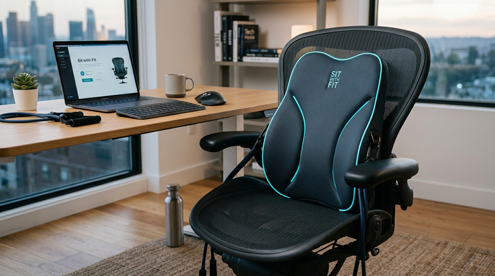

นั่งให้ถูกท่า สุขภาพดีขึ้นทุกนาที
เบาะรองนั่งอัจฉริยะที่ช่วยปรับสรีระ ตรวจจับการนั่งผิดท่าแบบเรียลไทม์ เตือนก่อนปวดหลัง พร้อมมินิเกมยืดเหยียดบนโต๊ะทำงาน

จำลองการตรวจจับ "การนั่งให้ถูกท่า"
คลิกเลือกท่านั่งเพื่อดูการจำลองแนวกระดูกสันหลังและการกระจายแรงกดบนเบาะแบบเรียลไทม์
แนวกระดูกสันหลัง (Spine Angle)
แผนผังแรงกดเซนเซอร์เบาะ (Cushion Heatmap)
4 นวัตกรรมที่ทำให้ Sit with Fit แตกต่าง
เน้นการทำงานจริง ความสบาย และความปลอดภัยสูงสุด
ตรวจจับท่านั่งแบบเรียลไทม์
เซนเซอร์ FSR Grid ฝังในเบาะและพนักพิง วัดการเทน้ำหนักซ้าย-ขวา และการสัมผัสของส่วนเอวตลอดเวลา
เตือนอัจฉริยะ ไม่น่ารำคาญ
ระบบหน่วงเวลา 3–5 นาที (Debounce Logic) ไม่เตือนมั่วเมื่อแค่ก้มหยิบของ สั่นเตือนละมุนระดับไมโคร ไม่ส่งเสียงรบกวน
ไร้กล้อง 100% ปลอดภัยต่อสิทธิข้อมูล
ทำงานสมบูรณ์แบบด้วยเซนเซอร์แรงกด ไม่จำเป็นต้องเปิดกล้อง ไม่มีการบันทึกภาพวิดีโอดิบคงค้างในพื้นที่ส่วนตัว
ยืดเหยียดสะบักและหลังใน 2 นาที
สายยางแรงต้านพร้อมปลอกผ้าเซฟตี้กันสะบัด + Load Cell วัดแรงดึงจริง ชวนขยับกล้ามเนื้อหลังแก้พังผืดเกาะสะบัก
โครงสร้างวิศวกรรม 5 ชั้น
ผสมผสานสรีระศาสตร์เข้ากับความปลอดภัยเชิงกล
Contour Memory Foam
โฟมคืนรูปความหนาแน่นสูง ออกแบบรองรับกระดูกส่วนเอว L1–L5 ปลอกผ้าตาข่ายระบายอากาศถอดซักได้
FSR Matrix Grid
แผ่นเซนเซอร์วัดแรงกดหลายจุดใต้เบาะและพนักพิง วัดการเทน้ำหนักและท่วงท่าการนั่ง
Load Cell & Bracket
โครงขายึดสเตนเลสพร้อมเซนเซอร์วัดแรงดึง ยางแรงต้านพร้อมปลอกผ้าหุ้มเซฟตี้ และตัวล็อกจำกัดระยะยืด
ESP32 IoT Module
ประมวลผล Local Edge Filter บันทึกข้อมูลออฟไลน์ลงแฟลชเมมโมรีเมื่อเน็ตหลุด และซิงก์ผ่าน BLE 5.0
Micro-Haptic Motor
มอเตอร์สั่นนุ่มนวล เตือนสติให้ปรับท่าทาง โดยไม่สร้างความรำคาญหรือรบกวนผู้อื่น
Non-Slip Silicone Base
พื้นยางซิลิโคนกันลื่นใต้เบาะ ยึดติดแน่นกับเก้าอี้ทุกรุ่น พร้อมสายรัดปรับระดับคู่
เปรียบเทียบกับ Lifted Lumbar ($1.14M)
ถอดบทเรียนการออกแบบเบาะสรีระ แล้วต่อยอดด้วยระบบดิจิทัลรับรู้พฤติกรรม
| มิติการใช้งาน | เบาะทั่วไป | Lifted Lumbar ($1.14M) | Sit with Fit (ของเรา) |
|---|---|---|---|
| 1. ปรับการนั่งให้ถูกท่า | ไม่มี | อาศัยรูปทรงโฟม | เซนเซอร์ FSR ตรวจและเตือนเมื่อนั่งผิดท่า |
| 2. ป้องกัน Alert Fatigue | ไม่มีระบบเตือน | ไม่มีระบบเตือน | หน่วงเวลา 3–5 นาที ป้องกันการเตือนมั่ว |
| 3. การยืดเหยียดระหว่างวัน | ไม่มี | ไม่มี | ยางแรงต้านพร้อม Load Cell วัดแรงดึงจริง |
| 4. ความเป็นส่วนตัว | - | - | ไร้กล้อง 100% ไม่ส่งภาพขึ้นคลาวด์ |
คลังซ้อมตอบคำถามกรรมการ 20 ข้อ (เฉลี่ย 7.9/10)
คลิกหัวข้อคำถามเพื่อดูจุดเด่น จุดที่ต้องระวัง และบทตอบกรรมการแบบมืออาชีพ